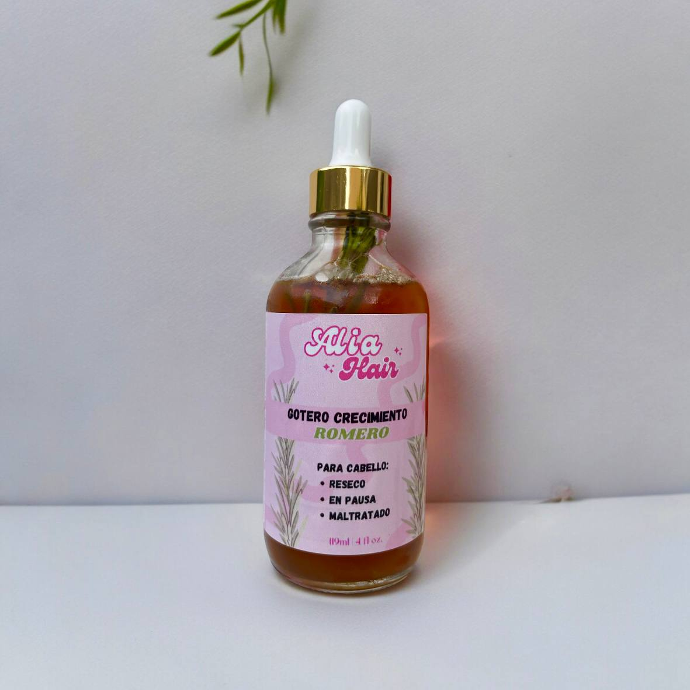

Alia Hair te ofrece un gotero capilar 100% natural que estimula el crecimiento, fortalece y da brillo a tu cabello.
 Ver productosEstimula el crecimiento, fortalece y da brillo. Hecho con romero y clavo dulce 100% naturales.
$RD 500.00
Comprar ahoraEn Alia Hair, creemos en el poder de la naturaleza para el cuidado del cabello. Nuestra pasión por los ingredientes naturales nos inspiró a crear este gotero único, que combina los beneficios del romero y el clavo dulce para brindarte un cabello saludable y radiante.
Elaboramos nuestros productos con ingredientes de alta calidad, cultivados de forma responsable y seleccionados cuidadosamente para asegurar su efectividad. En Alia Hair, tu bienestar es nuestra prioridad.
¿Tienes alguna pregunta? ¡Contáctanos!
Descubre cómo el romero puede ayudarte a tener un cabello más fuerte, saludable y con mayor crecimiento.
Conoce las propiedades del clavo dulce y cómo puede beneficiar la salud y el brillo de tu cabello.